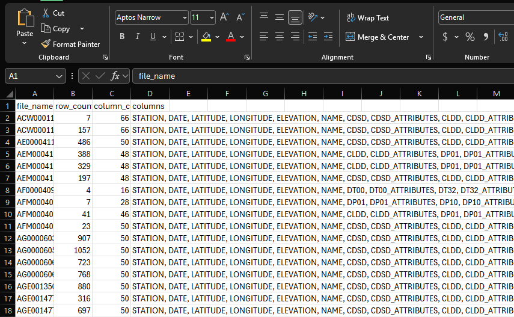
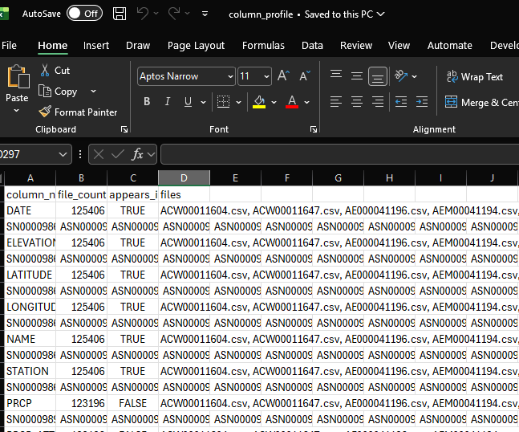
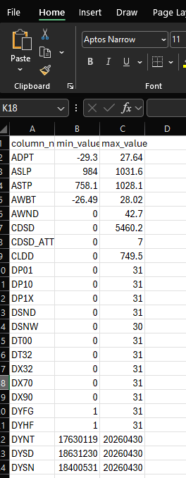
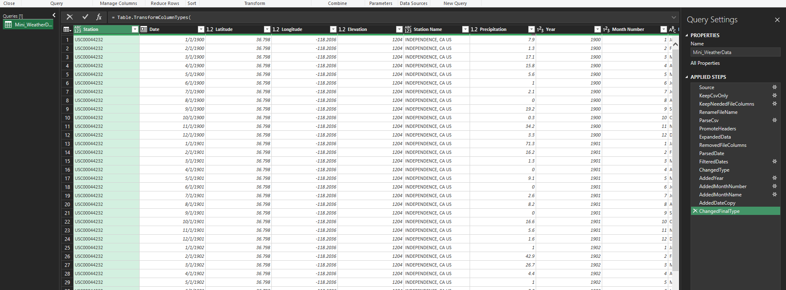
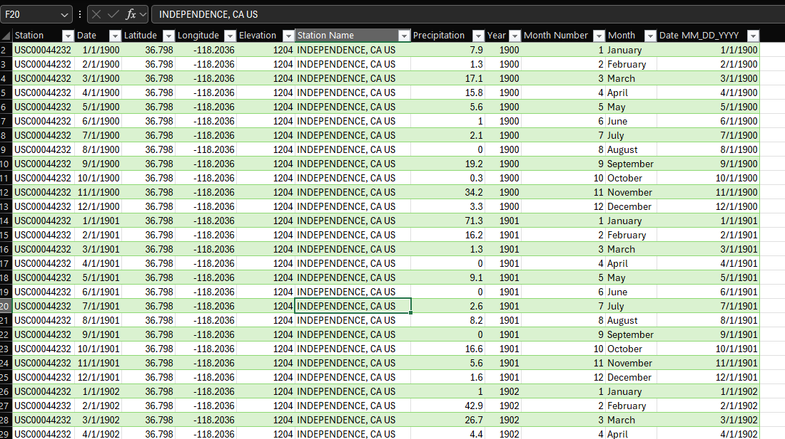
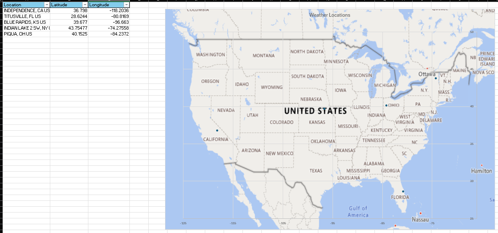
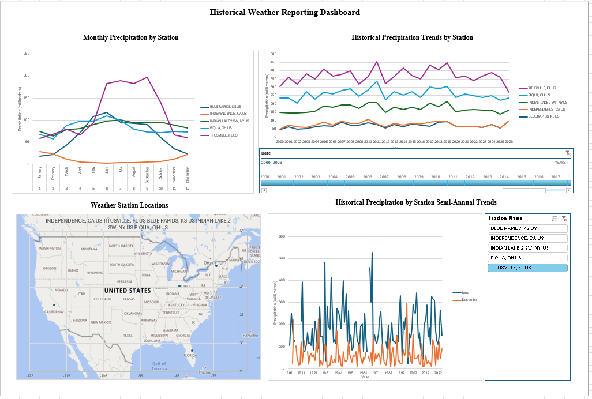
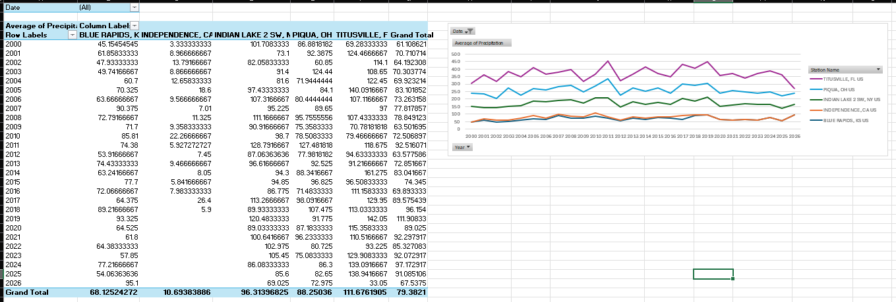
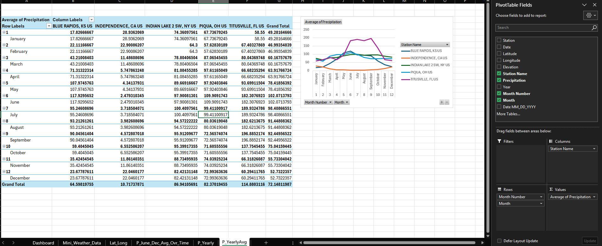
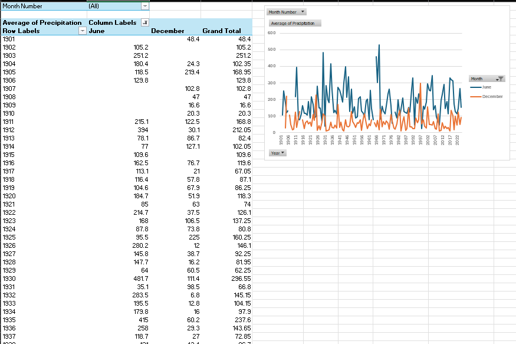

Profile Before Reporting
The file and column profiling sheets made the dataset easier to reason about before building visuals. This reduced guesswork and helped identify which fields were stable enough to use.
Portfolio Case Study
This project started with a practical reporting problem: how do you take a folder of historical NOAA weather files, inspect what is actually inside them, clean the useful fields, and turn the result into a reporting workbook that someone can explore without touching the raw data?
The final workbook combines file profiling, Power Query transformation, station-level filtering, geographic context, and Excel dashboarding. The goal was not just to make charts. The goal was to show the full workflow from messy source files to a usable reporting layer.
Overview
Public datasets are useful, but they rarely arrive in the exact shape needed for analysis. In this project, I worked through a NOAA weather dataset with multiple station files, inconsistent field availability, long historical date ranges, and many columns that were not needed for the final report.
The finished workbook focuses on a small set of selected stations and precipitation reporting. Behind that simple dashboard is a larger preparation workflow: identifying which files had usable columns, checking value ranges, filtering the dataset down to reporting fields, standardizing dates, and building pivot-based views for monthly, yearly, and semi-annual comparisons.
I built this as an Excel-centered project on purpose. Many businesses still run important reporting from Excel, and a strong Excel workflow can be extremely valuable when it is structured, documented, and supported by clean transformation logic.
Walkthrough
This project walkthrough shows the workbook structure, the Power Query workflow, and how the dashboard connects back to the prepared NOAA weather data.
Business Problem
The real challenge was not making a line chart. The challenge was getting from a folder of raw files to a reliable reporting table while keeping enough visibility into the process to trust the output. That is the kind of work that often sits between analytics, operations, and reporting.
Data Profiling
Before building visuals, I profiled the files to understand their row counts, column counts, available fields, and basic value ranges. This step helped separate useful reporting fields from noise before the data reached the dashboard.



Power Query Workflow
Power Query handled the repeatable transformation work: loading the source files, keeping only the files and columns needed, parsing CSV content, promoting headers, standardizing dates, adding calendar fields, and applying final data types.

This is one of the most important parts of the project because it shows the reporting layer was not assembled manually. The workbook has a repeatable cleanup path, which is what makes the final dashboard more useful than a one-off spreadsheet.
Prepared Dataset
After the source files were reduced and transformed, the reporting table included the key station, date, location, and precipitation fields needed for the workbook.

Location Context
The station latitude and longitude fields were used to show where the selected weather stations are located. This gives the report more context than a table of station names alone.

Dashboard
The final dashboard brings together monthly patterns, long-term station trends, map context, and semi-annual comparison views into a single reporting page.

This view gives a reviewer several ways to view the data: seasonal behavior by month, long-term annual movement by station, station geography, and selected semi-annual comparisons.
Analysis Views
The supporting worksheet views show the analysis behind the dashboard. They are intermediate views which feed into the main report page and are used to validate it.



Design Decisions
The file and column profiling sheets made the dataset easier to reason about before building visuals. This reduced guesswork and helped identify which fields were stable enough to use.
The reporting table was intentionally reduced to the fields needed for analysis during preprocessing. Station identity, date fields, location fields, and precipitation values were identified as stable fields across the specified reports imported by the dataset.
Pivot tables, slicers, timelines, charts, and maps were used where they made sense instead of forcing every step into a heavier BI platform.
The workbook includes visible preparation and analysis layers so the final dashboard is easier to audit, explain, and improve later.
Key Takeaways
Tools Used
Pivot tables, pivot charts, slicers, timelines, map visuals, workbook organization, and dashboard presentation.
Folder ingestion, CSV parsing, column selection, date parsing, calendar fields, filtering, cleanup, and final data typing.
File-level review, column availability checks, value range checks, and source structure analysis before dashboard development.
Outcome
The final workbook demonstrates a full Excel reporting workflow. This includes source file review, data profiling, Power Query transformation, prepared reporting tables, geographic context, pivot analysis, and dashboard design.
This kind of workflow is useful when a team needs more than a chart but does not necessarily need a full application. It creates a clear bridge between raw files and repeatable reporting, while keeping the logic visible enough for review and future improvement.
The project also shows the type of practical reporting work I focus on. Take messy data, make it understandable, and turn it into a dashboard or workbook that supports better analysis.